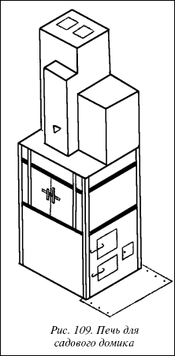
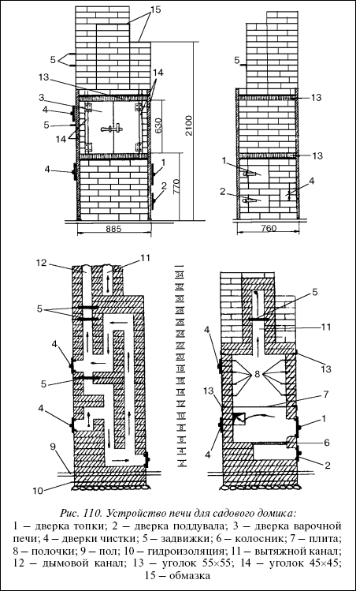
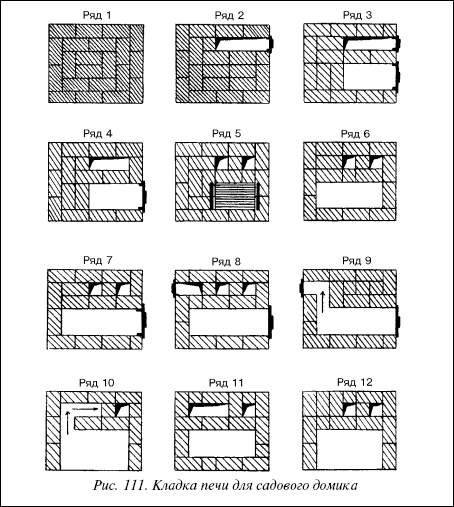
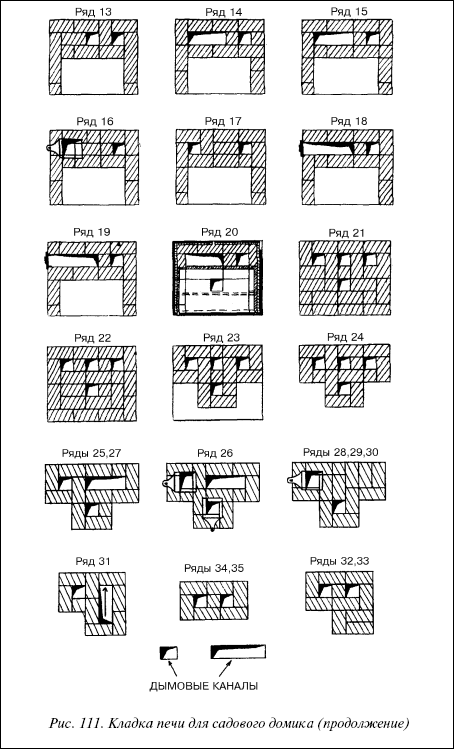
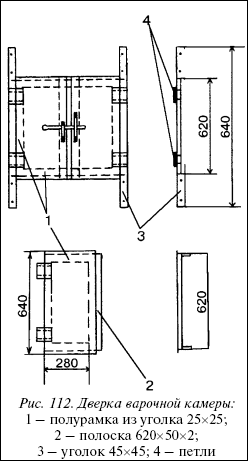
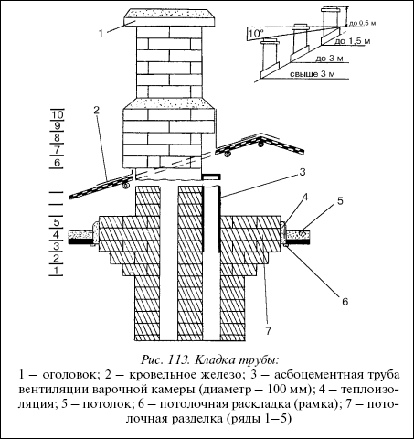
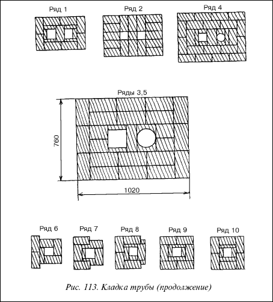
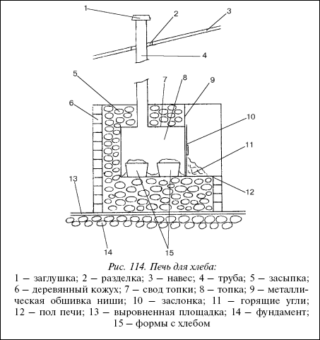
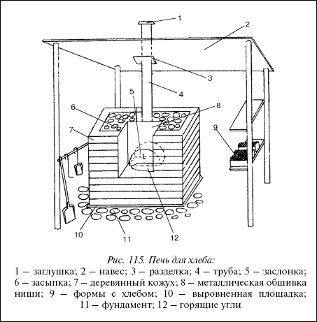
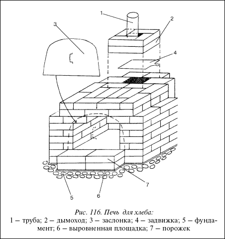

Летняя кухня.

Летняя кухня является незаменимым помощником на приусадебном участке.
Выбор местаМесто необходимо выбирать, исходя из следующих критериев:
• кратчайший путь сообщения с домом;
• минимальные затраты по оборудованию освещением, канализацией, водопроводом.
Для помещения кухни используют легкую каркасную конструкцию с односкатной пологой крышей, так как это требует минимальных затрат, чем другие конструкции крыши.

Рис. 109. Печь для садового домика
Лучше всего обшивать каркас продольными досками с паклей. Во избежание сквозняков стену с дверью делают глухой.
Ориентировать дверь целесообразно на север.
План помещенияКак правило помещение состоит из двух зон: кухня и столовая.

Рис. 110. Устройство печи для садового домика:
1 – дверка топки; 2 – дверка поддувала; 3 – дверка варочной печи; 4 – дверки чистки; 5 – задвижки; 6 – колосник; 7 – плита; 8 – полочки; 9 – пол; 10 – гидроизоляция; 11 – вытяжной канал; 12 – дымовой канал; 13 – уголок 55x55; 14 – уголок 45x45; 15 – обмазка
В необходимое оборудование для кухни должны входить: плита для приготовления пищи, рабочий стол, мойка, навесные шкафы для посуды и продуктов, холодильник, бак для воды, если нет водопровода. При наличии водопровода необходимо оборудовать водослив в местную канализацию. Кроме того в кухне с одной стороны необходимо окно, а с другой деревянная обрешетка елочкой. Это обеспечивает лучшую вентиляцию помещения.
Для внешней отделки лучше всего естественный цвет деревянных деталей. Их можно обработать олифой с добавлением пигментов и покрыть двумя-тремя слоями прозрачного водостойкого лака.
ПечьВ предлагаемой конструкции кухонная плита и варочная камера совмещаются в малогабаритной печи размером в плане 885x760 мм.
МатериалыСоветуем запомнить
Большая чугунная плита позволяет быстро прогреть помещение в холодные дни, варочная камера с двумя дверками используется не только для приготовления пищи, но и служит в качестве духового шкафа, в котором можно сушить фрукты и овощи. После окончания топки печь удерживает нормальную температуру в доме в течение 14–16 часов.
• Цемент марки 400 – 3–4 мешка;
• песок – 0,5 м ;

Рис. 111. Кладка печи для садового домика
• глина обыкновенная, красная – 6–8 ведер;
• кирпич красный, на печь – 500 штук, на трубу – примерно 600 штук;
• дверка топки;
• полудверка поддувала;
• дверки чистки дымоходов – 3 шт.;
• колосник;
• плита чугунная 710x410 мм;
• чугунные задвижки – 4 шт.;
• стальной уголок 55x55x3300 – 2 шт.;

Рис. 111. Кладка печи для садового домика (продолжение)
• стальной уголок 45x45x850 – 4 шт.;
• уголок алюминиевый 45x45x1550 – 4 шт.;
• уголок алюминиевый 25x25x1200 – 2 шт.;
• стальные полосы 370x60x2 – 8 шт.
Помимо этого необходимо будет изготовить на
заказ две дверки варочной печи.
Фундамент закладывается обычным образом, его глубина зависит от характера грунта, но в общем случае котлован метровой глубины, на дно которого насыпана десятисантиметровая песчаная подушка, которая удовлетворит необходимым требованиям. Котлован заливается бетоном или заполняется бутовым камнем с про-ливкой цементным раствором.
Требование
Размеры фундамента должны быть на 1020 миллиметров больше габаритов печи, а от внутренней стены помещения его должны отделять не менее 250 миллиметров – таковы непременные противопожарные требования. Кроме того, печной фундамент не должен соприкасаться с фундаментом дома.
КладкаВнимание
Долговечность печи напрямую зависит от качества кирпича. Для кладки должен применяться красный, нормально обожженный кирпич – он имеет розовый цвет и при ударе молотком издает чистый звук.
Пережженный кирпич с фиолетовым оттенком для печей не пригоден. Недожженный имеет оранжево-желтоватый цвет и пониженную прочность, он легко ломается и не годится для кладки труб. Желательно, чтобы кирпичи были одного размера, с ровной поверхностью, без трещин и сколов. Нужно помнить, что сколотыми или стесанными поверхностями кирпичи нельзя класть в сторону топки или дымохода.
Кладка печи ведется по чертежам каждого ряда. Разметив на фундаменте правильные четырехугольники размера печи, вначале выкладываем ряд кирпичей без раствора – для подгонки. Затем несколько кирпичей убираем и погружаем на 1–2 минуты в воду.

Рис. 112. Дверка варочной камеры:
1 – полурамка из уголка 25x25; 2 – полоска 620x50x2; 3 – уголок 45x45; 4 – петли
Дело в том, что сухие кирпичи плохо соединяются с раствором. В это время на освободившееся место кладется ровным слоем раствор, на него – смоченные кирпичи. Излишки раствора удаляются после легкого нажима. Таким же образом укладываются остальные кирпичи ряда, при этом все швы должны быть заполнены раствором.
На выложенный ряд стелят три слоя рубероида (гидроизоляция), после чего выкладывают следующий ряд (он на наших чертежах обозначен как первый) и продолжают кладку, проверяя горизонтальность после каждых двух-трех выложенных рядов.
Совет
Внутренние поверхности топки и дымоходов нужно сразу же очищать от налипшего раствора мокрой тряпкой, иначе впоследствии засохшие куски засорят канал.
Дверки топки, поддувала и чистки крепятся либо специальными скобами, либо отожженной проволокой, уложенной в швы между кирпичами.
Кромки кирпичей шестого ряда стесываются, чтобы колосник лег заподлицо. Поверх одиннадцатого ряда на растворе укладывается чугунная плита. С боков и сзади она перекрывает кирпичи, а спереди не доходит 15–20 миллиметров до края кладки. По периметру плиты прокладывается асбестовый шнур или нарезанные полоски листового асбеста, которые накрываются рамкой из уголка 55x55. Это предохранит кладку от разрыва при тепловом расширении чугуна.
Начиная с 14 ряда, в стенку варочной камеры через каждые два ряда заделываются стальные полоски, выступающие из швов на 20 миллиметров, – на них будут опираться противни. На 20-й ряд над варочной камерой кладется уголок 55x55, устанавливается рамка из того же уголка ребром вверх и двухмиллиметровый лист железа с отверстием 120x120 для вытяжного канала.

Рис. 113. Кладка трубы:
1 – оголовок; 2 – кровельное железо; 3 – асбоцементная труба вентиляции варочной камеры (диаметр – 100 мм); 4 – теплоизоляция; 5 – потолок; 6 – потолочная раскладка (рамка); 7 – потолочная разделка (ряды 1–5)
Выкладывая трубу, не забудьте о противопожарной разделке: между потолочным перекрытием и кирпичной обкладкой трубы должен быть по крайней мере 20–30 миллиметровый зазор, заполненный асбестом.
Требование
Высота трубы должна составлять не менее 5 метров от колосника. Начиная от потолочного перекрытия, она, согласно тем же противопожарным требованиям, должна быть оштукатурена и побелена.

Рис. 113. Кладка трубы (продолжение)
Углы печной кладки защищаются от повреждений уголками 45x45, которые крепятся болтами к рамкам. Варочная камера также обрамляется изнутри уголками. При желании печь можно оштукатурить раствором: одна часть глины, две части песка, одна часть цемента и 0,1 части асбеста. Поверхность печи перед нанесением раствора должна быть сухой и теплой, вначале наносится жидкий слой, а после высыхания – более густой.
Печь для выпечки хлеба и приготовления различных блюд русской кухниСоветуем запомнить
Печь будет надежно служить своим хозяевам, если соблюдать несложные правила эксплуатации. Раз в сезон нужно обязательно чистить дымовые каналы, тщательно замазывая даже самые мелкие трещины.
Это либо кирпичная печь, либо более простая, не требующая дефицитных материалов, насыпная.

Рис. 114. Печь для хлеба:
1 – заглушка; 2 – разделка; 3 – навес; 4 – труба; 5 – засыпка;
6 – деревянный кожух; 7 – свод топки; 8 – топка; 9 – металлическая обшивка ниши; 10 – заслонка; 11 – горящие угли; 12 – пол печи; 13 – выровненная площадка; 14 – фундамент; 15 – формы с хлебом
Совет
Засыпную печь лучше строить подальше от дома и хозяйственных построек. Это существенно упростит конструкцию, и отпадает целый ряд противопожарных мероприятий, необходимых при размещении печи в доме.
Насыпают песчаную площадку размером 1,5х1,5 метра, толщиной 10 сантиметров, сверху на площадку укладывается булыжник – это фундамент печи. Если нет подходящих камней, то поверх песка можно насыпать слой щебня или гальки толщиной 5–7 сантиметров и выровнять площадку цементным раствором.

Рис. 115. Печь для хлеба:
1 – заглушка; 2 – навес; 3 – разделка; 4 – труба; 5 – заслонка; 6 – засыпка; 7 – деревянный кожух; 8 – металлическая обшивка ниши; 9 – формы с хлебом; 10 – выровненная площадка; 11 – фундамент; 12 – горящие угли
На фундамент устанавливается кожух печи в виде сруба или дощатого короба. Его функция – удерживать засыпку и, частично, внешняя теплоизоляция. Засыпку (забутовку) короба камнем, песком, галькой, щебнем, гравием сначала выполняют до уровня пола (нижняя часть, под топки) печи – примерно 40 сантиметров от уровня фундамента. Затем выкладываются пол и полочка ниши перед ним. Лучше всего это сделать красным полнотелым глиняным кирпичом (силикатный, дырчатый и щелевой не годятся для кладки печи).

Рис. 116. Печь для хлеба:
1 – труба; 2 – дымоход; 3 – заслонка; 4 – задвижка; 5 – фундамент; 6 – выровненная площадка; 7 – порожек
На пол устанавливается металлическая топка, либо выкладывается она из кирпича, как в кирпичной печке, прибивается к кожуху жестяная обшивка ниши, устанавливается труба, и кожух засыпается доверху камнем или другой засыпкой. Металлическую топку можно изготовить из железной бочки (нижняя четверть), вырубив ее зубилом или вырезав автогеном.
Фундамент для стационарной кирпичной печиСледует учесть
Засыпка кожуха должна быть плотной и играть роль теплоизоляции и аккумулятора тепла. Камень и галька должны быть плотных пород. Не годятся песчаник, известняк, доломит, диабаз, сланцы, так как при нагревании они растрескиваются. Это особо важно в зоне самых высоких температур – выстилке пола и засыпке металлического свода топки.
Выкладывается так же, как и для засыпной, но желательно вымостить его булыжником. Иначе придется прокладывать слой гидроизоляции (толь, рубероид), так как кирпич гигроскопичен.
На рисунке 116изображена простейшая конструкция печи с перекрытием топки «напуском». В месте перекрытия кирпичи кладутся так, чтобы они свешивались внутрь, а следующие ряды удерживают эти кирпичи и перекрывают зазор. Таким способом можно выкладывать топку шириной до 380 мм и емкостью до 4–6 больших хлебных форм. Расход кирпича на печь – 160 штук.
Кирпичная печь кладется на глиняном растворе.
Совет
Кирпичи перед кладкой следует вымочить в воде до полного насыщения. Это повышает сцепление кирпича с раствором и прочность кладки.